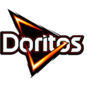

El inocente
Optimismo y sencillez
Quiere hacer lo correcto y confiar en que las cosas pueden salir bien.
Marcas que utilizan este arquetipo
- Coca-Cola
- Dove
La idea de arquetipo proviene de Carl Jung. El sistema de doce aplicado a marcas se desarrolló posteriormente en el trabajo de Carol S. Pearson y Margaret Mark.
Optimismo y sencillez
Quiere hacer lo correcto y confiar en que las cosas pueden salir bien.
Cercanía y pertenencia
Habla sin pretensión y recuerda que nadie tiene que resolverlo todo a solas.
Esfuerzo y superación
Invita a afrontar retos y desarrollar capacidades.
Apoyo y protección
Pone el bienestar de las personas en el centro.
Autonomía y descubrimiento
Abre caminos para buscar nuevas posibilidades.
Cambio y ruptura
Cuestiona una norma que ya no sirve y propone otra forma de actuar.
Vínculo y aprecio
Da valor a la conexión personal y al sentido de cercanía.
Imaginación y expresión
Transforma ideas en algo propio y tangible.
Alegría y ligereza
Usa el humor y el juego para aliviar tensión y acercarse.

DoritosConocimiento y criterio
Ayuda a comprender mejor antes de tomar una decisión.
Transformación y posibilidad
Hace visible un cambio que parecía difícil de imaginar.
Orden y responsabilidad
Ofrece estructura, continuidad y confianza en el sistema.